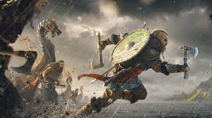
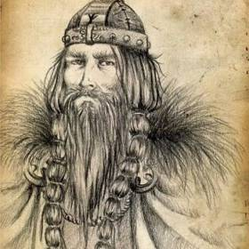

GANGE-ROLV: Gange-Rolv ( Göngu-Hrólfr ) era un jefe y Saga figura Viking del noruego cuyo verdadero nombre era Hrólfr Rögnvaldsson (ca. 860 - 932 ) y fue el hijo de Ragnvald Mørejarl , conocido como el conde que cortó Harald Hårfagre después de Noruega se unió en un solo reino. Gange-Rolv recibió el apodo porque era tan grande de estatura que siempre tenía que caminar, lo que implica que el caballo se volvió demasiado pequeño. Según la tradición noruega e islandesa, esta persona es idéntica al histórico Rollo , quien en el 911 fue nombrado duque de Normandía . Sin embargo, los orígenes de Rollo se debaten y un análisis de ADN de 2014 muestra que Rollo de Normandía y sus antepasados 12 generaciones atrás vinieron de Dinamarca, pero que los antepasados de sus antepasados emigraron a Europa desde la costa oeste de Noruega. Según la tradición, Gange-Rolv es de la isla de Vigra cerca de Ålesund. Uno de los que respalda las tradiciones mencionadas anteriormente es Jón Viðar Sigurðsson en el libro.Historia de Noruega 800-1300 (Det Norske Samlaget, 1999). Un probable pariente, Guillermo el Conquistador de Normandía , conquistó Inglaterra en 1066 y fundó allí una nueva casa real normanda. No se han conservado restos de Rollo. En 2014 se realizó un análisis del cromosoma Y ( análisis de ADN ) de lo que se cree que es el nieto de Rollo, el duque Ricardo I de Normandía . Estudios posteriores muestran que el esqueleto que se cree que es de Richard I no puede ser de él, pero es mucho mayor. En febrero de 2016, los investigadores Sturla Ellingvåg y Per Holck y Andaine Seguin-Orlando del Centro de Geogenética de la Universidad de Copenhague viajaron a Normandía para abrir dos sarcófagos en la ciudad de Fécamp .
GORM EL VIEJO
Gorm el Viejo (en danés: Gorm den Gamle), fue un caudillo vikingo danés que llegó a ser rey de Dinamarca (936-958). Nació antes del año 900 y posiblemente murió en 958. Su reino englobaba Jutlandia, Schleswig (hasta el río Eider), Funen, Selandia, Laaland, Falster, así como las regiones suecas de Skane y Halland. Su poder se extendía además sobre una parte de Noruega y algunas avanzadas escandinavas que habían surgido junto a las costas del mar Báltico, pobladas por eslavos. No se trataba de un reino unificado y centralizado, sino formado por pequeñas comunidades aisladas, por lo que Gorm y sus sucesores se consideraban, como mucho, como los jefes supremos de estas comunidades, y su poder era limitado y poco estable. El rey Gorm era pagano, pero recibió amistosamente a los misioneros que le envió el rey germano, los cuales consiguieron convertir al cristianismo a su esposa Thyra Danebod. Ambos tuvieron dos hijos: Canuto y Harald. El primero murió en una expedición vikinga en Inglaterra. A la muerte de Thyra, erigió las Piedras de Jelling en su memoria, donde también fue sepultado él mismo a su muerte. Su poder se extendía además sobre una parte de Noruega y algunas avanzadas escandinavas que habían surgido junto a las costas del mar Báltico, pobladas por eslavos. No se trataba de un reino unificado y centralizado, sino formado por pequeñas comunidades aisladas, por lo que Gorm y sus sucesores se consideraban, como mucho, como los jefes supremos de estas comunidades, y su poder era limitado y poco estable.